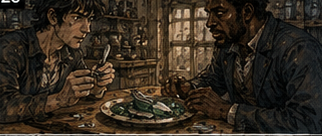
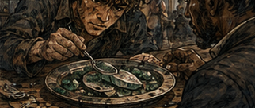
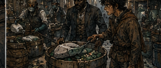
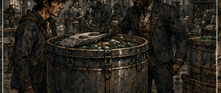

A spoon is an underrated investigative instrument. It is terrible at cutting. Mediocre at prying. Excellent at making the person who gave it to you feel safer than he should. I turned Antonius's spoon over in my hand.

"Water."
"No." I looked at him.
"You asked what you could use. I gave you a spoon."
"A spoon is not an entire laboratory."
"Good."
"Water."
"What are you doing with it?"
"I don't know yet."
"Then no."
I leaned back. This was the problem with Antonius. He had begun learning me. Not understanding me. That would have been intolerable. Learning the shape of the next mistake.
"Plate." He considered.
"Wood or ceramic?"
"Ceramic."
"No."
"Why?"
"Because that's my good plate."
"You have a good plate?"
"I have several."
I looked around the office. Antonius Vale, future owner of a black tower that would eventually become synonymous with money, leverage, and decisions made behind closed doors, currently had a favorite spoon and protected his crockery. Useful historical information.
"Wood."
He gave me a shallow wooden dish. I set it beside the green shard. The material was roughly the size of two fingers laid together. Translucent at the edges. Cloudier toward the center. The black veins did not sit on the surface. They ran through it. Not stone. Or not only stone. I pressed the spoon gently against one corner. Nothing. Hard. More pressure. Antonius said, "Greg."
"I'm using the spoon."
"You're using my desk." I moved the dish beneath it.
"Better?"
"No."
"Specific criticism improves performance."
"Don't break anything."
"That is not specific enough."
"Don't break the green thing, the dish, the spoon, the desk, yourself, me, the building, or anything I own." I paused.
"Define own."
"Greg."
"Fine." I pressed again. The shard shifted. The black line inside seemed to move. I stopped. Antonius noticed.
"What?"
"Maybe nothing."
"That's not your face for nothing."
"I have several faces."
"I know."
That should have bothered me more than it did. I lifted the shard with the spoon and rolled it a fraction. The vein had not moved. Light. Probably. I angled it toward the window. Green. Black. A memory scratched at the back of my skull. Canvas walls. Blood. A brass mortar. Someone grinding. Not the black part. The voice was female. Older?

No.
Tired. I could see hands but not a face. Green powder in a folded paper. Someone coughing. Then nothing. Memory was generous with atmosphere and stingy with answers.
"Do you have a lamp?"
"No."
"There is one behind you."
"No."
"Antonius."
"No fire."
"I wasn't going to burn it."
"That sentence means you considered burning it."
"I consider everything."
"Exactly." I looked at the shard.
Fine.
No fire. No knife. No water. No Pell. Spoon. Dish. Myself. That last resource was unfortunately available. I extended one finger toward the shard. Antonius slapped my hand away. I stared at him. He stared back.
"Did you just hit me?"
"Yes."
"I'm an adult."
"Then act like one."
"I was going to touch the dish."
"No, you weren't." He was correct. I disliked this phase of our relationship.
"Mana," I said.
His expression flattened.
"No."
"Not into it."
"No."
"A Barrier."
"No."
"I can put the Barrier between..."
"No."
"That's literally what Barriers are for."
"You learned it last week."
"Technically I learned it decades..." I stopped. Antonius's eyes sharpened.
"Decades?"
"Conceptually." He waited. I smiled. He did not.
"Long story."
"You are nineteen."
"Very observant."
"Greg."
"Barrier. Tiny. No contact. I want to see whether it reacts to nearby mana."
"How?"
That was the useful question. I looked down. How? Old me would have flooded it gently and watched the response. Current me could barely flood a biscuit. That might actually be an advantage. A large mana input could activate something. A tiny one might reveal sensitivity without supplying enough energy to do much. Might. Hessa would have objected to the word might.
Hessa was not here. That thought immediately made the plan worse. I sighed.
"What?"
"I just realized my teacher would say no."
"Then no."
"That's not how expertise works."
"It is when the expert isn't here and the idiot is."
"I'm not an idiot."
"Then why did you tell me she'd say no?"
Because apparently I had begun developing a conscience with Hessa's voice. Unfortunate. I set the spoon down.
"Fine." Antonius looked surprised. That annoyed me enough to nearly reverse the decision. Instead I leaned closer without touching anything.
"What did the salvager say?"
"About?"
"This."
"Found it in a chamber."
"What kind?"
"Stone."
"Everything in a dungeon is in a stone chamber."
"He didn't describe the architecture for your pleasure."
"Was it attached to anything?" Antonius opened his ledger. I smiled.
"You wrote it down."
"I write down collateral."
"This isn't collateral."
"I write down things people bring me when I may buy them."
"Read."
"No."
"Why?"
"Because I want to know what you see without being told what he saw." I sat back. There it was. A test. Not cruel. Useful. Antonius had started separating information. I felt an absurd little pulse of pride.
"You are getting better."
"At what?"
"Me."
His face did something I could not quite read. Then it disappeared.
"Work." I looked at the shard.
Fine.
What could I observe? Color. Structure. Hardness, roughly. No obvious smell beyond mineral sharpness. No visible residue. Black inclusion. Translucent green matrix. I moved the spoon around it. The underside had a duller surface. Broken?
No.
One face was irregular but rounded. Growth surface. The opposite face was sharp. Fracture.
"So it grew on something." Antonius said nothing.
Good.
I rotated it. The black veins widened toward the rounded face. Not random. They converged. I leaned closer. The black material was not distributed through the green. It originated from one side and branched inward. Like roots. Or contamination. Or the green had grown around it.
"Was the black part attached to the wall?"
Antonius's eyes changed. Small. There.
"Yes." I grinned.
"Good."
"Why?"
"I don't know."
His expression became hostile again.
"Still good."
I traced the shape in the air. Green growth around black substrate. A healer's tent. Green powder. Not the black part. Maybe the green was medicinal. Maybe the black was toxic. Too easy. Memory loved creating stories after the fact. I needed a test. Not a dangerous test. A comparison.
"Do you have more?"
"No."
"Did he?"
"Yes."
"How much?" Antonius did not answer.
"Enough that value matters."
"Everything's value matters."
"Enough that you are asking me instead of selling it as pretty glass." He tapped the ledger once.
"Maybe."
"How much?"
"Several sacks." I went still. Several sacks changed the problem. A curiosity could be worthless. Several sacks could become a market. Or a disposal cost.
"Did he bring the black material separately?"
"No."
"All veined?"
"Most."
"Most?" Antonius looked annoyed.
Excellent.
"Some pieces were clear green?"
"A few."
There. My memory moved. Not a name. A motion. Someone at the healer's table snapping green material. Sorting. Black pieces thrown into a bucket. Green into the mortar. The bucket had a lid. Why a lid? Smell? Contact? Mana? I closed my eyes. The memory dissolved when I chased it.
"Fuck."
"What?"
"I almost had it."
"What?"
"Someone sorting this." Antonius became very still. Not because he believed me. Because he had learned that when I said things like that, there was usually money nearby.
"Where?"
"Later."
"When?"
"Years."
"How many?" I opened my eyes.
"I don't know."
"Who?"
"I don't know."
"What was it used for?"
"I don't know."
"Useful."
"Very."
He leaned back. I could see him evaluating whether the strange young debtor in front of him was a prophet, liar, lunatic, or simply someone with an unusually broad education and terrible boundaries. I had spent weeks helping him avoid settling on an answer.
"Green part went into a mortar," I said. "Black part went into a covered bucket."
"Covered?"
"I think."
"Why?"
"I don't know."
"Was the green medicine?"
"Probably."
"Probably?"
"Healer's tent."
"Could have been poison."
"Yes."
"Could have been dye."
"Yes."
"Could have been cleaning powder."
"Yes."
"Could have been anything."
"Now you're understanding memory." Antonius stared. I had said too much again. Not enough to reveal the Chronoclast. Enough to be strange. Strange was becoming expensive. I picked up the spoon.
"We need someone who knows healing materials."
"Pell?"
"Wrong craft."
"Apothecary?"
"Maybe."
"Who?"
That was the problem. I knew excellent healers. Future healers. People who would eventually know enough to identify rare dungeon reagents by smell. At nineteen, some of them were children. One was probably not born. One had not yet lost the eye that made him famous, which was a sentence I did not enjoy knowing. Present Carrow? I searched memory. Shops. Guild suppliers.
Names. Nothing clean. Then a face. Round spectacles. Permanent irritation. A woman who once charged me triple because I had bled on her floor. Was that Carrow? Maybe. Name. Name.
"Meret." Antonius said, "Meret what?"
"I don't know."
"Excellent expert."
"Apothecary. Maybe south market."
"Maybe?"
"I haven't seen her in a long time."
"How long?" I looked at him. He smiled. Bastard.
"Long enough." Antonius stood.
"Where are you going?"
"South market."
"Now?"
"You wanted value."
"I wanted an answer."
"Answers live in places."
"I have work."
"Then stay." He looked at the green shard. Then at me. Then put the shard into a small wooden box. I held out my hand. He did not give it to me.
"You're coming."
"I thought you had work."
"I've met you."
"That doesn't answer the question."
"It answers mine."
We went to the south market. Meret was not there. There was an apothecary. There was a woman with round spectacles. She was not Meret. She was also approximately sixty years old, which meant unless my memory had become creative in new and upsetting ways, she would have been about one hundred when I knew her. Possible. Unlikely. Her sign read NERA VOSS - APOTHECARY & PHYSIC.
I stood outside. Antonius said, "Meret?"
"No."
"You said round spectacles."
"Many people have spectacles."
"You said south market."
"I said maybe."
"You are very expensive for a man who says maybe this often."
"You paid me six silver once."
"Exactly."
I looked through the window. Shelves. Dried herbs. Ceramic jars. Glass bottles. A copper distillation coil in the back. Clean. Organized. Two customers. One assistant. Good enough.
"We ask." Antonius did not move.
"What?"
"You ask."
"Why?"
"Because this was your idea."
"You're the one holding the box."
He gave me the box. Ah. Punishment through responsibility. I entered. The shop smelled like bitterroot, alcohol, dried flowers, and money pretending to be health. Nera Voss looked up from a scale.
"Wait."
I waited. Antonius entered behind me and immediately became invisible in the way competent men sometimes did when they wanted to watch. Not physically. Socially. He stood near a shelf and became a customer. I hated recognizing my own tricks in other people. Nera finished weighing a dark powder, folded the paper, tied it, took payment, and looked at me.
"Yes?"
"I have a material I'd like identified."
"Guild assay office."
"Closed?"
"Open."
"Expensive?"
"Appropriately."
"Slow?"
"Also appropriately." She looked past me to the next customer. I put the box on the counter.
"Recovered from a dungeon."
That got half a second. Enough.
"Guild assay."
"Several sacks."
Now I had her. Not because she was greedy. Because several sacks meant repeat supply. Professionals liked repeat supply. She opened the box. Her face did not change. Then it did. Barely. Recognition. I smiled. She closed the box.
"Where?"
"That's not part of identification."
"It is if you want identification."
"Why?"
"Because half the names for dungeon reagents are location names."
Fair. I glanced at Antonius. He did nothing. Of course.
"What can you tell me without origin?"
"Nothing for free."
"Price?"
"Two silver." I laughed. She looked offended.
"To look?"
"To identify."
"You already recognized it."
"Then you don't need me."
Good.
I liked her.
"One silver if you cannot identify it."
"Two."
"One now, one if you can give us a usable name, handling warning, and ordinary buyer."
She looked at me. Then Antonius. Ah. She had found the adult. Antonius said, "One and one." Traitor. Nera held out her hand. Antonius did not move. I paid. Of course I paid. One silver. My six silver had briefly existed. Pell had three. Now Nera had one. Money was apparently a substance that became unstable near me. She reopened the box.
"Don't touch the black."
Memory slammed into place hard enough that I actually laughed. Nera looked up. Antonius did not. He had the expression of a man watching a debt become interesting.
"Why?" I asked.
Nera reached beneath the counter and pulled on thin treated gloves. Not leather. Waxed gut, maybe. She lifted the shard.
"The green growth is called vairglass by salvagers. Apothecaries call the cleaned material vair resin, though it isn't resin."
"Medicinal?"
"Sometimes."
"For?"
"Depends on preparation."
"That's not an answer."
"It is the answer you're buying for one silver." I grinned. She turned the shard toward the light.
"The black is deadroot."
"Plant?"
"No."
"Fungal?"
"No."
"What is it?"
"We don't know."
Excellent.
Nera frowned at me.
"Why are you pleased?"
"Because I didn't know either."
"That is a low standard."
"You'd like my teacher." Antonius made a sound that might have been a cough. Nera continued.
"Vairglass forms around deadroot deposits in some old dungeon growths. The green material can be processed. The black contaminant causes fever, numbness, vomiting, and sometimes mana shock if powdered or heated."
There it was. Covered bucket. Not because the black part was precious. Because healers did not want contaminated dust in a tent.
"Contact?"
"Usually skin is fine if intact."
"Usually?"
"Don't lick it."
"I wasn't going to." Antonius said, "He was."
"I was not."
Nera looked between us.
"I don't care." I pointed at the black vein.
"Mana-active?"
"Both are."
"How?"
"Guild assay."
"Does the black react more strongly?"
"Guild assay."
"Does the green?"
"Guild assay."
"Can the green be used without grinding?"
"Some preparations dissolve it. Some powder it. Some heat it after cleaning."
"Cleaning how?"
"That costs more."
"How much?"
"Depends what you want."
There. The shape of the market. Not treasure. A processing problem. The raw material had value only if separated well enough for an apothecary to trust it. I thought of Pell.
No.
Stop. Pell had a regulator problem. Do not give Pell another life. I almost laughed. Nera noticed.
"What?"
"Personal growth."
"Somewhere else." Antonius stepped forward.
"Value raw," Antonius said.
Nera looked at him.
"Origin?" He gave her the dungeon name. I did not recognize it. That bothered me. Not every dungeon mattered.
Good.
The world remained larger than my memory. Nera considered.
"How much?"
"Several sacks."
"Mostly like this."
"Black-heavy?"
"Mixed."
"Dry?"
"Yes."
"Stored how?"
"Sacks."
Nera closed her eyes briefly.
"Not anymore."
Antonius's face changed.
"Why?"
"Friction. Dust. If the black crumbles and the sacks are moved, you're spreading deadroot powder." I looked at Antonius. He looked at me.
"Where are the sacks?"
"Warehouse."
"People?"
"Working."
"Move them."
"No." I blinked. Nera blinked. Antonius said, "If moving them creates dust, we don't move them until I know how." Oh.
Good.
Very good. I had already been halfway out the door. Old Greg solved danger by acting faster. Antonius had refused to let urgency choose the method. I hated when he was better than me at something in front of witnesses. Nera nodded.
"Wet cloth over mouth and nose. No sweeping. No shaking sacks. Keep flame away. Put each sack into a rigid bin if you have them. Slowly."
"Workers?"
"Anyone with numb fingers, metallic taste, fever, nausea, or mana tremor goes to a physic."
"Mana tremor?"
"Uncontrolled channel flutter."
My wrist suddenly felt very noticeable. I had not touched it. I had almost used mana near it. Hessa would kill me. After Nera saved me. Then Hessa might resurrect me to explain why. Antonius said, "Can you inspect the lot?"
"Yes."
"Price?" Antonius asked.
"Half gold."
"No."
"Then poison your warehouse."
"Three silver."
"Six."
"Four."
"Five and you provide handling."
"Five and I tell your workers what not to do."
"Done."
They shook hands. I stared. Nera looked at me.
"What?"
"You charged me one silver to say deadroot."
"You asked badly." Antonius smiled. I pointed at him.
"Don't encourage her." He took the box. Outside, I said, "I want my silver back."
"No."
"You got the answer."
"I paid five."
"You paid after my silver created the market."
"Your silver bought you an education."
"That is something poor people say when they lose money."
"You are poor."
"Temporarily."
"Consistently."
We walked faster. Not running. Antonius did not run. That was becoming another thing I noticed. He accelerated the system around him instead. At the warehouse, he did not shout about poison. He did not tell everyone a dangerous dungeon substance might be leaking through sacks near their flour, cloth, tools, and lungs. He walked in. Looked. Found the salvager.
Asked exactly where the sacks had been placed. Then he cleared the nearest work area for a "fragile inventory check." People complained. He paid two men for the lost hour. They stopped complaining. I watched.
"You knew they'd panic."
"People hear poison and become stupid."
"People hear danger and move."
"Usually badly."
Nera arrived twenty minutes later with gloves, cloth masks, two jars, waxed paper, and an assistant who looked terrified of her. The sacks were in a back storage bay. Six of them. Of course I wanted to see. Of course Antonius blocked the doorway.
"I'm helping."
"No."
"I identified it."
"Nera identified it."
"I identified that she could identify it."
"Congratulations."
"I know what the black part does."
"After she told you."
"I remembered first."
"After she told you."
"Simultaneously."
"Outside."
Nera looked over.
"He can stay if he wears this."
She threw me a cloth. I smiled at Antonius. He looked betrayed by professional disagreement. I tied the cloth over my mouth. Nera inspected the sacks one by one. No dramatic glow. No monster egg. No hidden curse. Just material. That was somehow better. The first sack contained mostly green chunks with thin black veins. The second was worse. The third had loose black grit at the bottom.
Nera stopped.
"That one doesn't move." Antonius said, "Why?"
"Bag's torn inside."
"Can it be salvaged?"
"Yes."
"How?"
"Rigid container. Damp cloth. Scoop pieces individually. Don't pour." I looked at the spoon still sticking out of Antonius's coat pocket. He saw me look.

"No."
I laughed into the cloth. The salvager arrived halfway through the inspection. His name was Corven. I knew that because Antonius used it. I did not recognize him from the future. He was broad, sun-browned, missing the tip of one ear, and furious.
"What are you doing?" Antonius stepped out of the bay.
"Protecting your sale."
"My men packed that."
"Badly."
Corven looked at Nera.
"Who is she?"
"Apothecary."
His anger shifted. Not gone. Focused.
"Vair?"
Nera looked at him.
"You knew?"
"We thought."
"You thought and put deadroot in cloth sacks?"
"We didn't know the black was deadroot."
"Then you didn't know it was vair."
Corven's jaw worked.
Good.
Not a fool. Embarrassed. Different problem. Antonius said, "How much more is there?" Corven hesitated. I felt the answer before he gave it.
"A lot."
Every part of me woke up. Antonius noticed. He pointed at me without looking.
"No."
"I didn't say anything."
"Your entire body said dungeon."
Corven looked at me.
"Who is he?"
"Debt."
"Consultant," I said.
"Debt," Antonius repeated.
"Paid consultant."
"Occasionally."
Corven looked between us and decided not to ask. Smart man.
"How much?" Antonius asked.
"Chamber wall was covered."
Nera's assistant stopped moving. Nera did not.
"Covered how?" she asked.
"Sheets. Growths. Some clear. Some black."
"Depth?"
"Finger. Sometimes more."
"How large is the chamber?"
Corven spread his hands.
"Twenty paces? Thirty?"
I forgot to breathe. Not because of money. A chamber. Dungeon growth. Unknown supply. Handling hazard. Processing. Access. A bounded problem with stone walls around it. I wanted it so badly I could taste it. Not the vairglass. The dungeon. Antonius turned his head slowly toward me.
"No."
"Again, I have not spoken."
"You are vibrating."
"I am standing still."
"Internally."
Corven laughed. I liked him less. Nera said, "If it's a stable deposit, there's money." Antonius stopped looking at me.
"How much?"
"Raw? Less than you're hoping."
"Processed?"
"More than I can buy."
"Who can?"
"Guild suppliers. Military physickers. Two larger apothecary houses. Maybe alchemists, depending on grade."
"Price."
"Clean green, maybe eight to twelve silver a pound in small quantities. Less in bulk."
Corven swore. I did the calculation. Then stopped myself. Sacks were not pounds of clean green. Black contamination. Loss during processing. Labor. Transport. Dungeon access. Risk. Market depth. Antonius had infected me.
Good.
"Raw mixed?" I asked.
Nera shrugged.
"One silver a pound if I trust the source and contamination is low. Maybe less. Black-heavy, I don't buy."
Corven's excitement died. There. Future knowledge did not turn a dungeon wall into gold. It turned it into a supply chain. Much less romantic. Much more useful. Antonius asked, "Cleaning method?" Nera smiled.
"That costs."
"How much?"
"For commercial handling?"
"Yes."
"Two gold."
Corven laughed. Antonius did not. I looked at the material. Green around black. Separate without grinding the black. Manual sorting worked for healers because they were processing handfuls. Several sacks? A chamber wall? You needed a process. Break the green away from the black without pulverizing either. Different hardness? Different fracture? Different response to heat?
Water? Mana? Pell...
No.
Not Pell. Maybe.
No.
I physically pressed my lips together under the cloth. Antonius saw.
"What?"
"Nothing."
"That's your face for something."
"I am practicing restraint."
"Poorly."
Nera said, "If you're thinking of crushing it, don't."
"I wasn't." I had been.
"Grinding mixed material is how people poison themselves."
"What about fracture?" She looked at me.
"Meaning?"
"The green grows around the deadroot. If their fracture behavior differs, you might separate larger pieces mechanically before any fine processing."
"Maybe."
"Water?"
"Maybe."
"Heat?"
"No."
That answer was fast.
"Why?"
"Deadroot dust gets worse when heated."
"Worse how?"
"More reactive."
"Mana?" She stared.
"Guild assay." I laughed. She was going to make money off me eventually. Antonius said, "What do you need to test separation?" Nera thought.
"A safe yard. Water. Covered bins. Hammers. Screens. Gloves. Two workers who listen."
"How long?"
"Half day to learn whether the obvious methods work."
"Price?"
"Eight silver."
Corven said, "I'll pay half." Antonius looked at him.
"Why?"
"It's my material."
"You owe me two gold."
"Which I can pay if this sells."
There. Antonius's face became very still. Not greedy. Structural. I watched him see the shape. Corven had already repaid three of five gold. The remaining debt was secured. The new material could produce additional value. But only if someone paid to learn how to handle it. Antonius could spend four silver to improve the probability of repayment and potentially create a new trade relationship.
That was his kind of bet.
"Half," Antonius said.
"I'll..."
"No," Antonius said.
"I didn't finish."
"You were going to invest."
"I was going to offer labor." He paused. That was different. I smiled.
"What labor?"
"Testing."
"No."
"Observation."
"No."
"Documentation." Antonius looked at Nera. She looked at me.
"Can you write?" I was offended.
"Yes."
"Legibly?"
Less offended.
"Usually." Antonius said, "No mana." I opened my mouth.
"No magic." I closed it.
"No experiments she doesn't approve."
"Define experiment."
"Greg."
Nera said, "He can write." Antonius looked at me. I could feel the boundary forming. A job. Not my life. Not my company. Not my dungeon. A half day. Record what happens. Ask useful questions. Do not acquire a processing enterprise. Do not recruit Pell. Do not cast Barrier at poisonous dungeon material. I hated how much easier the world became when someone else built the fence.
"Fine." Antonius narrowed his eyes.
"What?"
"You agreed too quickly."
"I'm growing."
"No."
"People keep saying that."
"No one says that."
"Hessa implied it."
"Did she?"
"No."
"Tomorrow morning," Nera said. "West yard behind my shop."
Corven nodded. I nodded. Antonius said, "You work for me tomorrow morning."
"I know."
"This counts."
"Excellent."
"Do not say that."
The next morning, I discovered that vairglass was less interesting when wet. Most things are. Nera had set up three shallow bins in the yard. One dry. One with water. One with a weak vinegar solution that made the entire place smell like pickled feet. Corven brought a small sack. Antonius brought himself. I brought paper. And, because history enjoys humiliating men who become too pleased with their own symbolism, a spoon.
Antonius saw it.
"Is that mine?"
"No."
"Where did you get it?"
"Bought it."
"Why?"
"Professional equipment."
Nera said, "If either of you wastes my morning, leave." We worked. Not dramatically. That mattered. The first method was hand sorting. Slow. Safe enough. Bad economics. The second was soaking. The green material changed slightly after twenty minutes. Not dissolving. The surface became slick. The black did not. Interesting. Nera scraped the boundary with a wooden pick.
A thin layer separated.
"Again," I said. She did. The green peeled away from one black vein in a translucent flake. Corven leaned closer. Antonius did not. He had learned about dust. I wrote:
WATER - SURFACE SOFTENS? BOUNDARY RELEASES.
Nera corrected me.
"Not softens."
"What?"
"Feels the same."
"Then lubricates?"
"Maybe."
"Swells?"
"Maybe."
"Reaction?"
"Maybe." I looked at her.
"You are enjoying this."
"Two gold for the process."
"We haven't bought it."
"You will."
Antonius said, "Keep testing." The vinegar did almost nothing useful. A light hammer tap fractured the green unpredictably. A second shattered a piece and made Nera swear at Corven. We stopped that. Screens were useless at the current size. Then I noticed something. The black veins were not just structurally different. Water collected along them. Not much. A thin dark line.
Surface tension? Texture? I moved closer.
"Can I use the spoon?"
Nera looked at the spoon.
"To do what?"
"Press the green beside the vein. Not the black."
"Why?"
"I want to see whether the boundary fails under sideways pressure." She considered. Then handed me gloves. Antonius said, "No mana."
"I know."
I pressed. Nothing. More. The spoon slipped. The shard rotated. I stopped. Wrong angle. I repositioned it. The old version of me would have solved this with magic. Tiny Barrier. Perfectly placed. Pressure exactly where needed. Current me had a spoon.
Good.
I pressed again, not down. Across. A thin green flake popped away. Everyone stopped. I stared. Nera picked up the flake with tongs. Mostly clean. Tiny black trace at one edge.
"Again," she said.
I smiled. Antonius sighed. We spent the next hour discovering that I had not invented anything miraculous. Side pressure along a wet boundary worked sometimes. Not always. Thicker black veins released more cleanly. Fine branching contamination remained difficult. The material varied. Of course it varied. Real materials hated elegant theories. Still. By midday we had three piles.
Clean enough green. Questionable green. Black-heavy waste. Nera weighed them. Then weighed the original sample.
"Thirty-eight percent clean on first pass."
Corven frowned.
"That's bad?"
"That's honest," Nera said.
"Second pass on questionable?"
"Maybe another twenty."
"Labor?"
"Too much by hand." I looked at the spoon. Shape. Pressure. Boundary. Repeatability. A tool could do this. Not Pell. I looked away. Antonius caught it.
"What?"
"Nothing."
"Greg."
"A clamp."
Nera looked over.
"Explain."
"Not a machine. A hand tool. Two shaped jaws. Hold the wet piece. Apply sideways pressure along the growth boundary. More controlled than hammering. Faster than a spoon."
Corven said, "Can you make one?"
"No." Antonius smiled. I pointed at him.
"Do not."
"You know someone."
"I know several people."
"Pell."
"He's busy."
That surprised Antonius.
Good.
I meant it. Pell had a regulator. A reference set. A problem already narrowed. I was not going to arrive with poisonous green rocks and a new industry because my brain had discovered another door. Not today.
"Any competent toolmaker," I said. "It's a clamp."
Nera nodded slowly.
"Wood first."
"Exactly."
"Different jaw shapes."
"Exactly."
"Replaceable inserts." I stopped. That was better.
"Yes." She smiled. I liked her less. Antonius said, "Cost?" Nera looked at Corven.
"To develop?"
"To know whether this can become worth doing." She thought.
"Another day."
"Money."
"One gold."
"No."
"Then use spoons." I held mine up.
"Scalable."
No one laughed. Philistines. Antonius negotiated her to seven silver plus first right to buy a small batch at a fixed price. Corven agreed to provide material. Nera agreed to document handling. I agreed to nothing. That was the victory. I stood in the yard with green residue on my gloves, a page full of notes, and absolutely no ownership in a new vairglass processing venture.
It felt unnatural. Antonius took the notes.
"Good."
"I wrote them."
"I know."
"Those are mine."
"You were working for me."
"Copies." He considered.
"Fine."
Growth. I smiled. He frowned.
"Don't."
We walked back toward his warehouse. For three streets, I managed not to mention the dungeon. Then I failed.
"How dangerous was it?"
"No."
"Corven went in and came out."
"No."
"That's evidence."
"It's evidence that Corven came out."
"Party size?"
"No."
"Depth?"
"No."
"Monster profile?"
"No."
"Mana density?"
"No."
"Traps?"
"No."
"Architecture?"
"No."
"How far from Carrow?"
"No." I shoved my hands into my pockets.
"This is unreasonable."
"You are not going."
"I know."
"You say that like you're planning around the sentence."
"I'm gathering information."
"For what?"
Good question. I almost answered automatically. Future. Preparation. Opportunity. Training. But those were category words. Not reasons. What would I do with the information today? Nothing. What could I do with it? Obsess. Design. Spend money. Recruit people. Distract Pell. Annoy Hessa. Probably attempt to accelerate my body into a dungeon before it was ready.
I hated the clarity.
"Nothing," I said. Antonius looked at me.
"What?"
"Nothing."
"That's new."
"Fuck you."
We kept walking. At the warehouse, Corven's sacks were being transferred into rigid bins under Nera's handling instructions. Slowly. No panic. No dust. A problem had become a process. I liked that. Antonius stopped beside the first sealed bin.

"How much do you think it's worth?"
"The vairglass?"
"All of it."
I considered. Old Greg would have multiplied clean yield by retail price and produced a number impressive enough to make everyone stupid. Current Greg had been learning. Against his will.
"Unknown." Antonius nodded. I hated that too.
"Raw material has a floor if Nera buys it. Better value if separation works. But we don't know yield across the whole lot, labor, buyer depth, transport, spoilage, whether the chamber is repeatable, or whether Corven can safely recover more."
"Good."
"Stop sounding pleased."
"Why?"
"Because I miss when you thought I was an idiot."
"I still think you're an idiot."
"Professionally."
"Professionally, you're occasionally useful."
There it was. Not praise.
Better.
I looked at the sealed bin. Green glass. Black veins. Yesterday it had been a mysterious dungeon treasure. Today it was a hazardous raw material with a possible market and an annoying processing constraint. Much less magical. Much more real. I thought of the healer's tent, the covered bucket, the woman whose face I still could not remember.
Forty years from now, I would know this material well enough to forget where I learned it. Knowledge in my first life had accumulated until it felt like mine, even though almost none of it had begun with me. Someone had taught me. Someone had tested. Someone had gotten sick. Someone had written the handling rule.
I had returned with the result and mistaken it for possession. Uncomfortable. Useful. I said, "I want to go." Antonius did not ask where.
"No."
"Eventually."
"Maybe."
That was different. I looked at him. He looked back.
"What?"
"You said maybe."
"I regret it."
"Too late."
"Greg."
"Eventually."
"When you can go into a warehouse without trying to cast magic at poison."
"I did not cast magic at poison."
"Because I stopped you."
"Still counts."
"No."
I grinned. He went inside. I stayed beside the bin for another moment. Dungeon. Not yet. That hurt less than it had yesterday. Not because I wanted it less. Because for once, not yet had edges. Mana. Body. Barrier. Judgment. A party I did not have. Skills I remembered but could not yet perform. There were things between me and the dungeon.
Good.
Things between meant a path. I touched the spoon in my pocket. Then immediately removed my hand because I had just spent a morning learning not to touch objects after handling deadroot. Progress. I went to wash my hands.